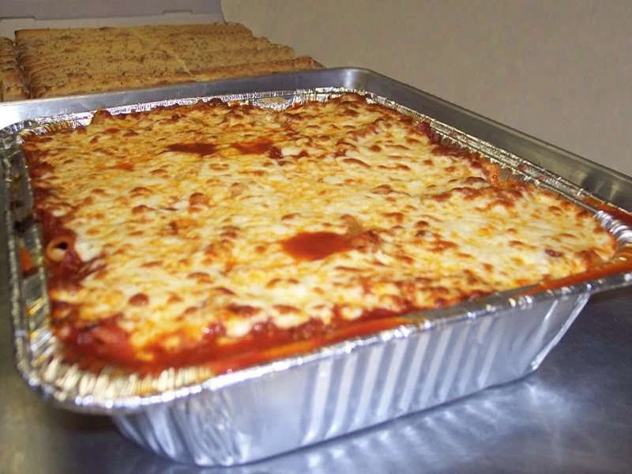
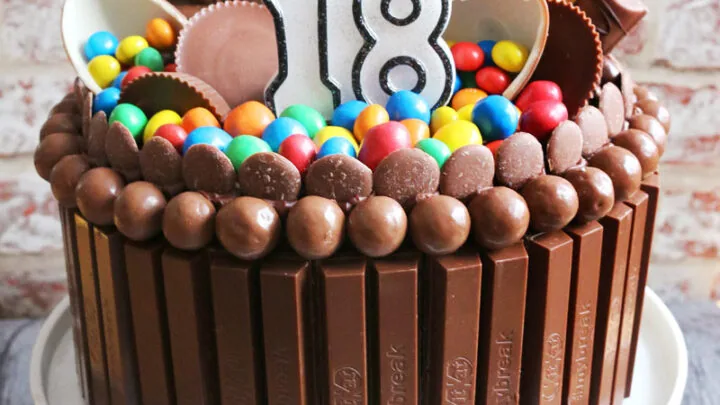
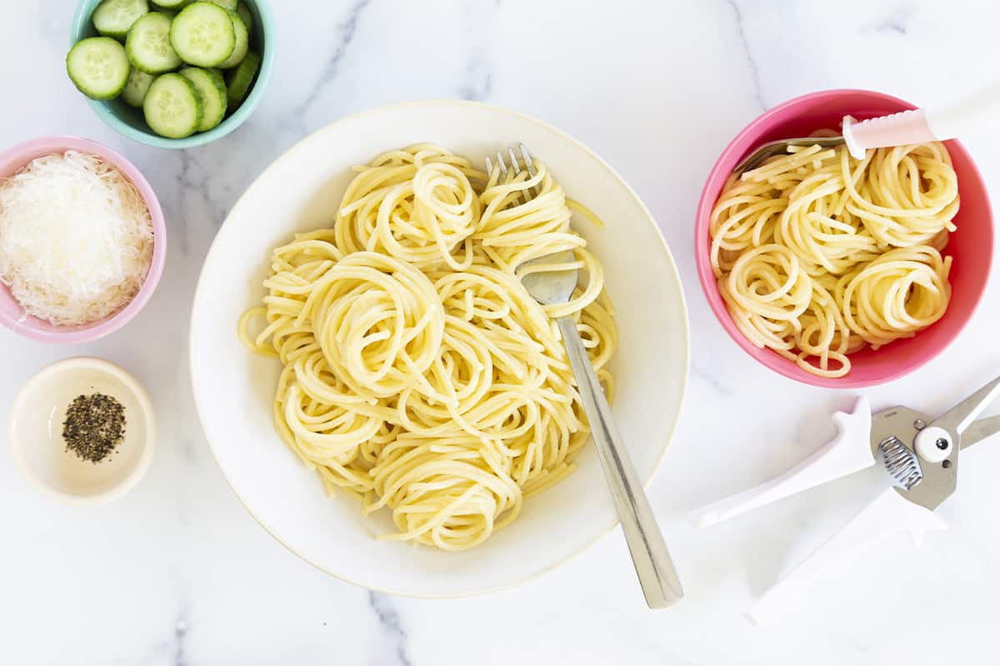

Odin Recipes

Cheesy homemade Lasagna
This lasagna was made by my Uncle Vinny. It's been password down for generations. But I've decided to share
this wonderful recipe with you all today.
- Ravoli
- Cheese
- Tomato Sauce
- Feta
- Put the pasta in
- Put sauce in
- Repeat until the pan is full
- Put shredded cheese and feta on top
- Cook for 40 minutes

Chocolate goodness
- Dark Chocolate
- Almond Milk
- chocolate Icing
- Dark Chocolate
- Almond Milk
- chocolate Icing

- Noodles
- Plant Based Butter
- Sppon
- Noodles
- Plant Based Butter
- Sppon
Enjoy!